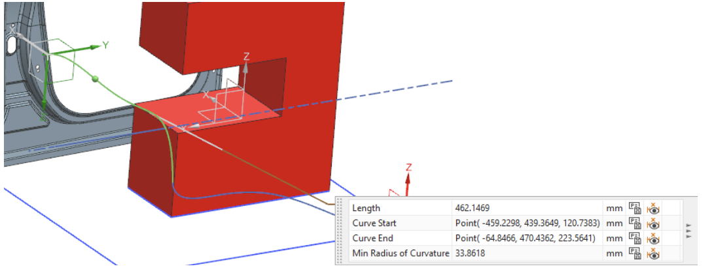
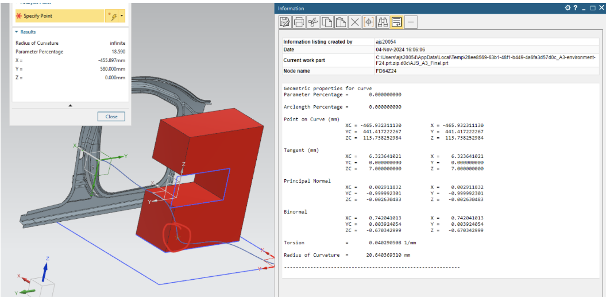
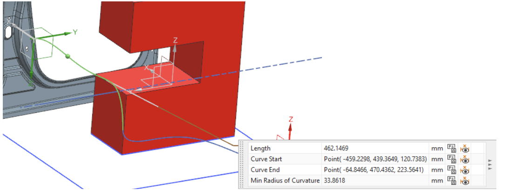
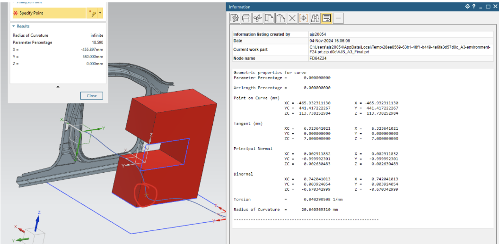

CAD Projects
Airplane CAD Model
WWII-style aircraft modeled for aerodynamic design and surface continuity.


Project Details
Constructed fuselage and wings using Siemens NX surface modeling techniques with a focus on aerodynamic performance. Created watertight surfaces using Through Curve and Bridge Surface. Verified aerodynamic surface quality using curvature analysis.
Robotic Arm
Articulated robotic arm with curvature analysis and multi-axis simulation.
 



Project Details
Simulated 3D serpentine curve motion to study curvature, trajectory length, and acceleration using Siemens NX and MATLAB. Calculated max acceleration of 0.44 m/s² at (−465.93, 441.42, 113.74). Demonstrated advanced CAD and analytical techniques.
Drone Assembly
Modular drone model featuring individual part files and full mechanical layout.


Project Details
Each component was created using parametric modeling and assembled with concentric, coincident, and offset constraints. The modular design highlights attention to manufacturing and 3D-print compatibility.
Rear Spinner Showcase
Rear spinner mechanics in orthogonal CAD layouts.


Project Details
Modeled and displayed from orthogonal perspectives to evaluate design symmetry and component housing integration.
Component Sketches
2D sketches demonstrating orthographic design, dimensioning, and projection logic.


Project Details
Included exploded views and auxiliary sections. Followed GD&T conventions. Practiced layout strategies for mechanical drawings.
Miscellaneous CAD Models
Precision components demonstrating varied mechanical concepts.


Project Details
Parts designed in SolidWorks and Siemens NX to industry tolerances. Included components like gears, holders, and base fixtures to demonstrate mechanical design versatility.